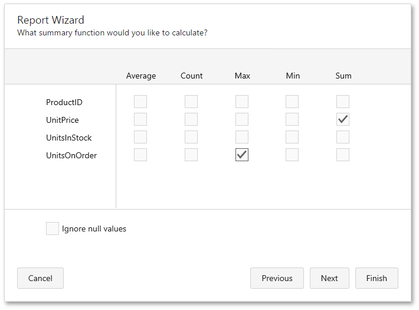

Choose Summary Options
Use this page to specify totals to be displayed for each data group and grand totals for the entire report. For instance, you may need to display the sum of values in a particular field, the average value, etc. Specified totals will be displayed after corresponding groups and in the report footer.

This page displays all available numerical and date-time fields that aren't used to group data. Using the check box table, you can specify which functions should be calculated for these fields.
Sometimes, data fields can contain empty values (this is different from zero in a numeric field). If you don't want to take these values into account when calculating totals, check Ignore NULL values. Otherwise, these values will be treated as zeros for numeric fields and the earliest system date for date-time fields.
You can stop the wizard at this step by clicking Finish. If you want to customize your report further, click Next to proceed to the next wizard page: Choose a Report Layout.